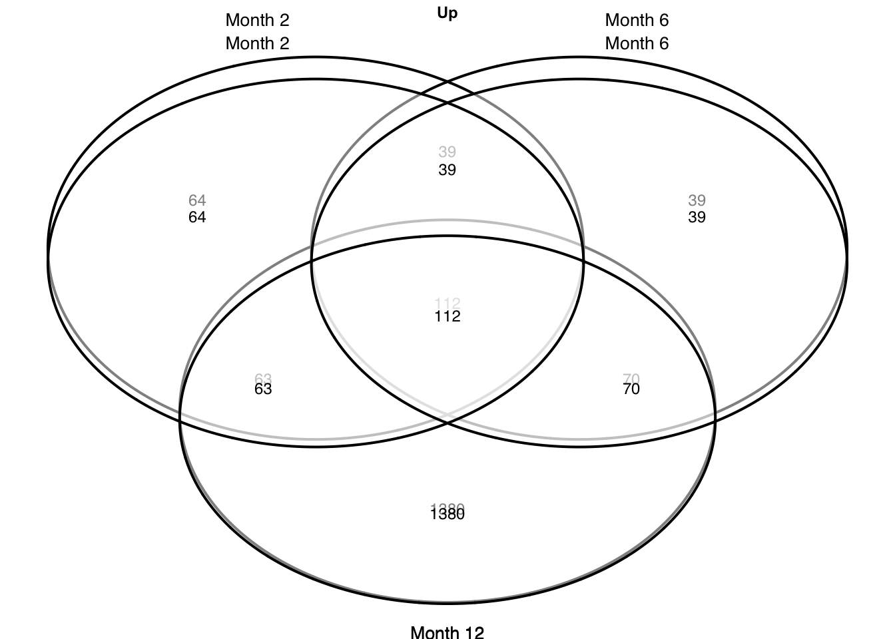
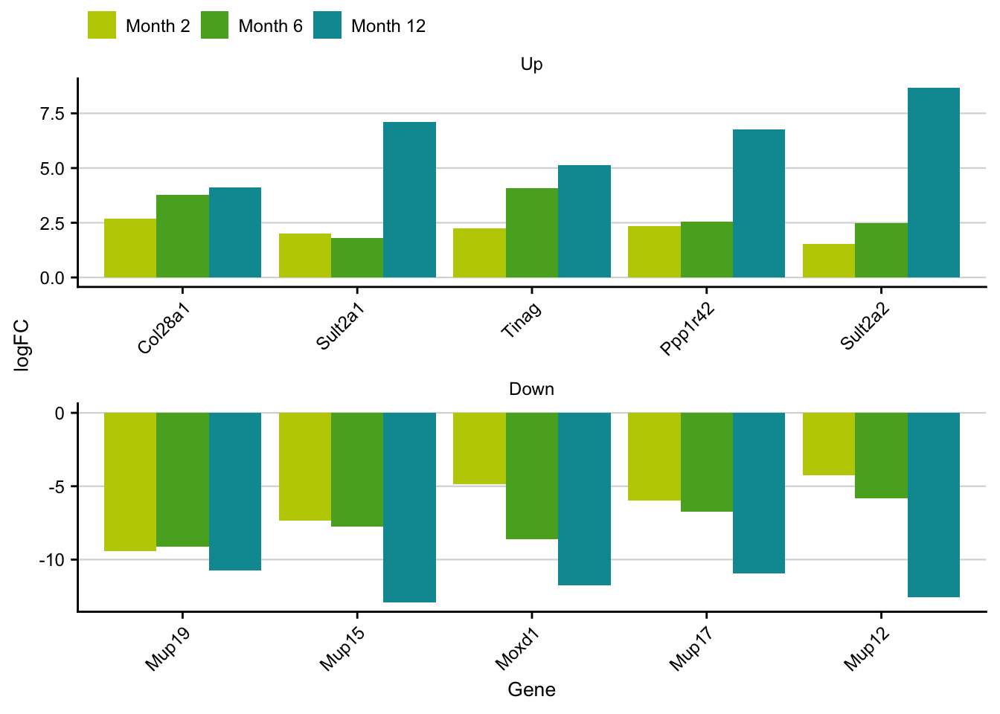

Chronic CCl4 (Fig. 1)
Last updated: 2021-02-28
Checks: 7 0
Knit directory: liver-disease-atlas/
This reproducible R Markdown analysis was created with workflowr (version 1.6.2). The Checks tab describes the reproducibility checks that were applied when the results were created. The Past versions tab lists the development history.
Great! Since the R Markdown file has been committed to the Git repository, you know the exact version of the code that produced these results.
Great job! The global environment was empty. Objects defined in the global environment can affect the analysis in your R Markdown file in unknown ways. For reproduciblity it’s best to always run the code in an empty environment.
The command set.seed(20201218) was run prior to running the code in the R Markdown file. Setting a seed ensures that any results that rely on randomness, e.g. subsampling or permutations, are reproducible.
Great job! Recording the operating system, R version, and package versions is critical for reproducibility.
Nice! There were no cached chunks for this analysis, so you can be confident that you successfully produced the results during this run.
Great job! Using relative paths to the files within your workflowr project makes it easier to run your code on other machines.
Great! You are using Git for version control. Tracking code development and connecting the code version to the results is critical for reproducibility.
The results in this page were generated with repository version 7f331d0. See the Past versions tab to see a history of the changes made to the R Markdown and HTML files.
Note that you need to be careful to ensure that all relevant files for the analysis have been committed to Git prior to generating the results (you can use wflow_publish or wflow_git_commit). workflowr only checks the R Markdown file, but you know if there are other scripts or data files that it depends on. Below is the status of the Git repository when the results were generated:
Ignored files:
Ignored: .DS_Store
Ignored: .Rhistory
Ignored: .Rproj.user/
Ignored: analysis/01-mouse-chronic-ccl4_cache/
Ignored: analysis/02-mouse-acute-apap_cache/
Ignored: analysis/03-mouse-acute-ccl4_cache/
Ignored: analysis/04-mouse-acute-ph_cache/
Ignored: analysis/05-mouse-acute-bdl_cache/
Ignored: analysis/06-mouse-acute-lps_cache/
Ignored: analysis/07-mouse-acute-tunicamycin_cache/
Ignored: analysis/08-human-diehl-nafld_cache/
Ignored: analysis/09-human-hampe13-nash_cache/
Ignored: analysis/10-human-hampe14-misc_cache/
Ignored: analysis/11-human-hoang-nafld_cache/
Ignored: analysis/12-human-ramnath-fibrosis_cache/
Ignored: analysis/13-meta-chronic-vs-acute_cache/
Ignored: analysis/14-meta-mouse-vs-human_cache/
Ignored: code/.DS_Store
Ignored: code/README.html
Ignored: code/meta-mouse-vs-human/.DS_Store
Ignored: data.zip
Ignored: data/.DS_Store
Ignored: data/annotation/
Ignored: data/human-diehl-nafld/
Ignored: data/human-hampe13-nash/
Ignored: data/human-hampe14-misc/
Ignored: data/human-hoang-nafld/
Ignored: data/human-ramnath-fibrosis/
Ignored: data/meta-chronic-vs-acute/
Ignored: data/meta-mouse-vs-human/
Ignored: data/mouse-acute-apap/
Ignored: data/mouse-acute-bdl/
Ignored: data/mouse-acute-ccl4/
Ignored: data/mouse-acute-lps/
Ignored: data/mouse-acute-ph/
Ignored: data/mouse-acute-tunicamycin/
Ignored: data/mouse-chronic-ccl4/
Ignored: external_software/.DS_Store
Ignored: external_software/README.html
Ignored: external_software/stem/.DS_Store
Ignored: geo_submission/
Ignored: output/.DS_Store
Ignored: output/README.html
Ignored: renv/library/
Ignored: renv/staging/
Untracked files:
Untracked: figures/
Untracked: output/human-diehl-nafld/
Untracked: output/human-hampe13-nash/
Untracked: output/human-hampe14-misc/
Untracked: output/human-hoang-nafld/
Untracked: output/human-ramnath-fibrosis/
Untracked: output/meta-chronic-vs-acute/
Untracked: output/meta-mouse-vs-human/
Untracked: output/mouse-acute-apap/
Untracked: output/mouse-acute-bdl/
Untracked: output/mouse-acute-ccl4/
Untracked: output/mouse-acute-lps/
Untracked: output/mouse-acute-ph/
Untracked: output/mouse-acute-tunicamycin/
Untracked: output/mouse-chronic-ccl4/
Untracked: tables/
Unstaged changes:
Modified: .gitignore
Deleted: analysis/human-diehl-nafld.Rmd
Deleted: analysis/human-hampe13-nash.Rmd
Deleted: analysis/human-hampe14-misc.Rmd
Deleted: analysis/human-hoang-nafld.Rmd
Deleted: analysis/human-ramnath-fibrosis.Rmd
Deleted: analysis/meta-chronic-vs-acute.Rmd
Deleted: analysis/meta-mouse-vs-human.Rmd
Deleted: analysis/mouse-acute-apap.Rmd
Deleted: analysis/mouse-acute-bdl.Rmd
Deleted: analysis/mouse-acute-ccl4.Rmd
Deleted: analysis/mouse-acute-lps.Rmd
Deleted: analysis/mouse-acute-ph.Rmd
Deleted: analysis/mouse-acute-tunicamycin.Rmd
Deleted: analysis/mouse-chronic-ccl4.Rmd
Deleted: analysis/plot-acute-apap.Rmd
Deleted: analysis/plot-acute-bdl.Rmd
Deleted: analysis/plot-acute-ccl4.Rmd
Deleted: analysis/plot-acute-ph.Rmd
Deleted: analysis/plot-chronic-ccl4.Rmd
Deleted: analysis/plot-chronic-vs-acute.Rmd
Deleted: analysis/plot-mouse-vs-human.Rmd
Deleted: analysis/plot-precision-recall.Rmd
Deleted: analysis/plot-study-overview.Rmd
Deleted: analysis/save-tables.Rmd
Note that any generated files, e.g. HTML, png, CSS, etc., are not included in this status report because it is ok for generated content to have uncommitted changes.
These are the previous versions of the repository in which changes were made to the R Markdown (analysis/15_plot-chronic-ccl4.Rmd) and HTML (docs/15_plot-chronic-ccl4.html) files. If you’ve configured a remote Git repository (see ?wflow_git_remote), click on the hyperlinks in the table below to view the files as they were in that past version.
| File | Version | Author | Date | Message |
|---|---|---|---|---|
| Rmd | 7f331d0 | christianholland | 2021-02-28 | wflow_publish("analysis/*", delete_cache = TRUE, republish = TRUE) |
Introduction
Here we generate publication ready plots of the analysis of the chronic CCl4 mouse model.
Libraries and sources
These libraries and sources are used for this analysis.
library(tidyverse)
library(tidylog)
library(here)
library(AachenColorPalette)
library(cowplot)
library(lemon)
library(ggpubr)
library(VennDiagram)
library(grid)
library(gridExtra)
library(patchwork)
source(here("code/utils-plots.R"))Definition of global variables that are used throughout this analysis.
# i/o
data_path <- "data/mouse-chronic-ccl4"
output_path <- "output/mouse-chronic-ccl4"
# graphical parameters
# fontsize
fz <- 9
# keys to annotate contrasts
key_mm <- readRDS(here("data/meta-chronic-vs-acute/contrast_annotation.rds"))Design
design <- ggdraw() +
draw_image(here(data_path, "exp-design.pdf")) +
theme(plot.margin = margin(r = 1, unit = "cm"))Histology
histology <- ggdraw() +
draw_image(here(data_path, "histology.png"))Liver enyzmes
df <- read_csv2(here(data_path, "liver_enzymes.csv")) %>%
mutate(time = parse_number(time),
time = replace_na(time, 0)) %>%
mutate(time = ordered(time)) %>%
pivot_longer(col = -c(time), names_to = "enzyme", values_to = "y") %>%
mutate(enzyme = factor(str_to_upper(enzyme), levels = c("ALT", "AST", "ALP")))
df_summary <- df %>%
group_by(time, enzyme) %>%
summarise(mean_se(y)) %>%
ungroup()
liver_enzymes_partial <- df %>%
ggplot(aes(x = time, y = y)) +
geom_boxplot() +
geom_jitter(alpha = 0.5) +
# geom_errorbar(aes(ymin = ymin, ymax = ymax), width = 0.5) +
# geom_col() +
facet_rep_wrap(~enzyme, scales = "free", ncol = 3) +
labs(x = "Time in month", y = "U/L") +
my_theme(grid = "y", fsize = fz) +
stat_compare_means(
data = df, label = "p.signif",
ref.group = "0", hide.ns = T
)
liver_enzymes <- df %>%
ggplot(aes(x = time, y = y)) +
geom_boxplot() +
geom_jitter(alpha = 0.5) +
# geom_errorbar(aes(ymin = ymin, ymax = ymax), width = 0.5) +
# geom_col() +
facet_rep_wrap(~enzyme, scales = "free", ncol = 1) +
labs(x = "Time in month", y = "U/L") +
my_theme(grid = "y", fsize = fz) +
stat_compare_means(
data = df, label = "p.signif",
ref.group = "0", hide.ns = T
)
liver_enzymes
PCA
pca_result <- readRDS(here(output_path, "pca_result.rds"))
keys <- key_mm %>%
filter(treatment == "CCl4" & class == "Chronic") %>%
distinct(time = value, label = time_label2) %>%
drop_na() %>%
add_row(time = 0, label = "Control") %>%
mutate(time = ordered(time))
pca_plot <- pca_result$coords %>%
arrange(time) %>%
inner_join(keys, by = "time") %>%
mutate(label = fct_inorder(label)) %>%
mutate(treatment = case_when(treatment == "oil" ~ "Oil",
treatment == "ccl4" ~ "CCl4 + Oil",
treatment == "ctrl" ~ "Control")) %>%
ggplot(aes(x=PC1, y=PC2, color=label, shape = treatment, label = label)) +
geom_point() +
labs(x = paste0("PC1", " (", pca_result$var[1], "%)"),
y = paste0("PC2", " (", pca_result$var[2], "%)"),
color = "Time", shape = "Treatment") +
my_theme(fsize = fz) +
theme(legend.position = "top",
legend.box.margin = margin(10, 0, -20, 10)) +
scale_color_manual(values = aachen_color(c(
"violet", "bordeaux", "red", "orange"
)))
pca_plot
Volcano plot
df <- readRDS(here(output_path, "limma_result.rds")) %>%
filter(contrast_reference == "pure_ccl4") %>%
inner_join(key_mm, by = "contrast") %>%
select(-contrast) %>%
rename(contrast = time_label2) %>%
mutate(contrast = fct_drop(contrast)) %>%
mutate(regulation = fct_recode(regulation,
Up = "up", Down = "down",
n.s. = "ns"
))
deg_count <- df %>%
add_count(contrast, regulation) %>%
filter(regulation != "n.s.") %>%
mutate(regulation = fct_drop(regulation)) %>%
mutate(
logFC = case_when(
regulation == "Up" ~ 0.75 * max(logFC),
regulation == "Down" ~ 0.75 * min(logFC)
),
pval = 0.4
) %>%
distinct(n, contrast, logFC, pval, regulation, value) %>%
complete(contrast, nesting(regulation, logFC, pval), fill = list(n = 0))
volcano <- df %>%
plot_volcano(ncol = 1) +
geom_text(
data = filter(deg_count),
aes(y = pval, label = n), size = fz / (14 / 5),
hjust = "inward", vjust = "inward",
show.legend = F
) +
theme(
legend.position = "top",
legend.box.margin = margin(-10, 0, -10, 0)
) +
labs(color = "Regulation") +
my_theme(grid = "y", fsize = fz)
volcano
Top DEGs
df <- readRDS(here(output_path, "limma_result.rds")) %>%
filter(contrast_reference == "pure_ccl4") %>%
inner_join(key_mm) %>%
select(-class) %>%
rename(class = time_label2)
top_genes_df <- df %>%
group_by(class, sign(logFC)) %>%
slice_max(order_by = abs(statistic), n = 10, with_ties = F) %>%
ungroup() %>%
nest(data = -c(class, value))
plots <- top_genes_df %>%
mutate(p = pmap(., .f = plot_top_genes, fontsize = fz))
# for main panel
top_genes <- plots %>%
pull(p) %>%
wrap_plots() +
plot_layout(ncol = 1)
top_genes
Gene overlap
df <- readRDS(here(output_path, "limma_result.rds"))
tables = df %>%
filter(contrast_reference == "pure_ccl4") %>%
mutate(class = str_c("Month ", parse_number(as.character(contrast)))) %>%
select(-contrast_reference, -contrast) %>%
mutate(class = factor(class,
levels = c("Month 2", "Month 6", "Month 12"))) %>%
group_split(class)
# extract labellers
c1 = tables[[1]] %>% distinct(class) %>% pull() %>% as.character()
c2 = tables[[2]] %>% distinct(class) %>% pull() %>% as.character()
c3 = tables[[3]] %>% distinct(class) %>% pull() %>% as.character()
t1 = tables[[1]] %>% count(regulation)
t2 = tables[[2]] %>% count(regulation)
t3 = tables[[3]] %>% count(regulation)
plots = c("up", "down") %>%
map(function(r) {
# set sizes of regulated genes
a1 = t1 %>% filter(regulation == r) %>% pull(n)
a2 = t2 %>% filter(regulation == r) %>% pull(n)
a3 = t3 %>% filter(regulation == r) %>% pull(n)
a12 = purrr::reduce(
list(tables[[1]] %>% filter(regulation == r) %>% pull(gene),
tables[[2]] %>% filter(regulation == r) %>% pull(gene)),
intersect) %>%
length()
a23 = purrr::reduce(
list(tables[[2]] %>% filter(regulation == r) %>% pull(gene),
tables[[3]] %>% filter(regulation == r) %>% pull(gene)),
intersect) %>%
length()
a13 = purrr::reduce(
list(tables[[1]] %>% filter(regulation == r) %>% pull(gene),
tables[[3]] %>% filter(regulation == r) %>% pull(gene)),
intersect) %>%
length()
a123 = purrr::reduce(
list(tables[[1]] %>% filter(regulation == r) %>% pull(gene),
tables[[2]] %>% filter(regulation == r) %>% pull(gene),
tables[[3]] %>% filter(regulation == r) %>% pull(gene)),
intersect) %>%
length()
grid.newpage()
p = draw.triple.venn(
area1 = a1, area2 = a2, area3 = a3,
n12 = a12, n23 = a23, n13 = a13,
n123 = a123,
category = c(c1, c2, c3),
# lty = "blank",
cex = 1/12*fz,
fontfamily = rep("sans", 7),
# fill = aachen_color(c("purple", "petrol", "red")),
# cat.col = aachen_color(c("purple", "petrol", "red")),
cat.cex = 1/12*(fz+1),
cat.fontfamily = rep("sans", 3),
cat.pos = c(350,10,180),
cat.prompts = T,
cat.just = list(c(0.5, 1), c(0.5, 1), c(0.5, 1))
) %>%
as_ggplot() %>%
grid.arrange(top = textGrob(str_to_title(r), gp=gpar(fontsize=fz,
fontface = "bold")))
})
gene_overlap = wrap_plots(plots)Top gene of overlap
df = readRDS(here(output_path, "limma_result.rds")) %>%
filter(contrast_reference == "pure_ccl4") %>%
inner_join(key_mm) %>%
select(-class) %>%
rename(class = time_label2) %>%
filter(regulation != "ns") %>%
mutate(regulation = fct_inorder(str_to_title(regulation)))
top_genes_ranked = df %>%
# filter for genes that are deregulated at all time points
group_by(gene, regulation) %>%
filter(n() == 3) %>%
summarise(mean_logfc = mean(logFC)) %>%
group_by(regulation) %>%
mutate(rank = row_number(-abs(mean_logfc))) %>%
ungroup()
top_genes_of_overlap = df %>%
inner_join(top_genes_ranked, by=c("gene", "regulation"))
top_overlap_genes = top_genes_of_overlap %>%
filter(rank <= 5) %>%
ggplot(aes(x=fct_reorder(gene, mean_logfc), y=logFC, group = class,
fill = class)) +
geom_col(position = "dodge") +
facet_rep_wrap(~regulation, ncol = 1, scales = "free") +
my_theme(grid = "y", fsize = fz) +
labs(x="Gene", y="logFC", fill = NULL) +
theme(legend.position = "top",
legend.box.margin = margin(-2, 0, -10, 0)) +
scale_fill_manual(values = aachen_color(c("maygreen", "green", "turquoise"))) +
theme(axis.text.x = element_text(angle = 45, vjust = 1, hjust=1))
top_overlap_genes
Time series cluster
profile_label = tribble(
~profile, ~process,
"STEM ID: 14", "Inflammation",
"STEM ID: 6", "Proliferation",
"STEM ID: 17", NA_character_,
"STEM ID: 12", NA_character_,
"STEM ID: 7", "Metabolism (1)",
"STEM ID: 9", "Metabolism (2)",
"STEM ID: 13", "ECM"
) %>%
mutate(profile = fct_inorder(profile),
process = coalesce(process, profile),
process = fct_inorder(process))
stem_res <- readRDS(here(output_path, "stem_result.rds")) %>%
filter(key == "pure_ccl4") %>%
filter(p <= 0.05) %>%
mutate(profile = fct_reorder(str_c(
"STEM ID: ",
as.character(profile)
), p)) %>%
inner_join(profile_label, by = "profile") %>%
select(-profile) %>%
rename(profile = process)
# extract meta data of profiles
profile_anno <- stem_res %>%
group_by(key, profile, p) %>%
mutate(y = 1.2 * abs(max(value))) %>%
ungroup() %>%
mutate(max_time = max(time)) %>%
distinct(key, profile, p, size, y, max_time) %>%
mutate(label = str_c(size, " ", "genes"))
ts_cluster <- stem_res %>%
plot_stem_profiles(model_profile = F, nrow = 2) +
labs(x = "Time in Months") +
geom_text(
data = profile_anno, aes(x = 0, y = y, label = label),
inherit.aes = F, size = fz / (14 / 5), hjust = "inward"
) +
my_theme(grid = "no", fsize = fz) +
scale_x_continuous(
breaks = unique(stem_res$time),
guide = guide_axis(n.dodge = 1)
)
ts_cluster
Collage
Figure 1
fig1 <- (design + histology) /
((liver_enzymes | (gene_overlap / plot_spacer()) | top_overlap_genes) +
plot_layout(widths = c(1,2.5,2))) /
ts_cluster +
plot_layout(height = c(1, 1, 1)) +
plot_annotation(tag_levels = list(c("A", "B", "C", "D", "", "E", "F"))) &
theme(
plot.tag = element_text(size = fz + 3, face = "bold"),
legend.key.height = unit(11.5, "pt"),
legend.key.width = unit(12.5, "pt")
)
fig1
ggsave(here("figures/Figure 1.pdf"), fig1,
width = 21, height = 29.7, units = c("cm")
)
ggsave(here("figures/Figure 1.png"), fig1,
width = 21, height = 29.7, units = c("cm")
)Partial Figure 1
Supplementary Figure 1.1
sfig1_1 <- pca_plot / (volcano | top_genes) +
plot_annotation(tag_levels = list(c("A", "B", "C"))) &
theme(
plot.tag = element_text(size = fz + 3, face = "bold"),
legend.key.height = unit(11.5, "pt"),
legend.key.width = unit(12.5, "pt")
)
sfig1_1
ggsave(here("figures/Supplementary Figure 1.1.pdf"), sfig1_1,
width = 21, height = 29.7, units = c("cm")
)
ggsave(here("figures/Supplementary Figure 1.1.png"), sfig1_1,
width = 21, height = 29.7, units = c("cm")
)Time spend to execute this analysis: 00:50 minutes.
sessionInfo()
#> R version 4.0.2 (2020-06-22)
#> Platform: x86_64-apple-darwin17.0 (64-bit)
#> Running under: macOS Mojave 10.14.5
#>
#> Matrix products: default
#> BLAS: /Library/Frameworks/R.framework/Versions/4.0/Resources/lib/libRblas.dylib
#> LAPACK: /Library/Frameworks/R.framework/Versions/4.0/Resources/lib/libRlapack.dylib
#>
#> locale:
#> [1] en_US.UTF-8/en_US.UTF-8/en_US.UTF-8/C/en_US.UTF-8/en_US.UTF-8
#>
#> attached base packages:
#> [1] grid stats graphics grDevices datasets utils methods
#> [8] base
#>
#> other attached packages:
#> [1] patchwork_1.1.1 gridExtra_2.3 VennDiagram_1.6.20
#> [4] futile.logger_1.4.3 ggpubr_0.4.0 lemon_0.4.5
#> [7] cowplot_1.1.0 AachenColorPalette_1.1.2 here_1.0.1
#> [10] tidylog_1.0.2 forcats_0.5.0 stringr_1.4.0
#> [13] dplyr_1.0.2 purrr_0.3.4 readr_1.4.0
#> [16] tidyr_1.1.2 tibble_3.0.4 ggplot2_3.3.2
#> [19] tidyverse_1.3.0 workflowr_1.6.2
#>
#> loaded via a namespace (and not attached):
#> [1] fs_1.5.0 lubridate_1.7.9.2 httr_1.4.2
#> [4] rprojroot_2.0.2 tools_4.0.2 backports_1.2.1
#> [7] R6_2.5.0 DBI_1.1.0 colorspace_2.0-0
#> [10] withr_2.3.0 tidyselect_1.1.0 curl_4.3
#> [13] compiler_4.0.2 git2r_0.27.1 cli_2.2.0
#> [16] rvest_0.3.6 formatR_1.7 xml2_1.3.2
#> [19] labeling_0.4.2 scales_1.1.1 digest_0.6.27
#> [22] foreign_0.8-80 rmarkdown_2.6 rio_0.5.16
#> [25] pkgconfig_2.0.3 htmltools_0.5.0 dbplyr_2.0.0
#> [28] rlang_0.4.9 readxl_1.3.1 rstudioapi_0.13
#> [31] farver_2.0.3 generics_0.1.0 jsonlite_1.7.2
#> [34] gtools_3.8.2 zip_2.1.1 car_3.0-10
#> [37] magrittr_2.0.1 Rcpp_1.0.5 munsell_0.5.0
#> [40] fansi_0.4.1 abind_1.4-5 lifecycle_0.2.0
#> [43] stringi_1.5.3 whisker_0.4 yaml_2.2.1
#> [46] carData_3.0-4 plyr_1.8.6 promises_1.1.1
#> [49] crayon_1.3.4 lattice_0.20-41 haven_2.3.1
#> [52] hms_0.5.3 magick_2.5.2 knitr_1.30
#> [55] pillar_1.4.7 ggsignif_0.6.0 codetools_0.2-16
#> [58] clisymbols_1.2.0 futile.options_1.0.1 reprex_0.3.0
#> [61] glue_1.4.2 evaluate_0.14 lambda.r_1.2.4
#> [64] data.table_1.13.4 renv_0.12.3 modelr_0.1.8
#> [67] vctrs_0.3.6 httpuv_1.5.4 cellranger_1.1.0
#> [70] gtable_0.3.0 assertthat_0.2.1 xfun_0.19
#> [73] openxlsx_4.2.3 broom_0.7.3 rstatix_0.6.0
#> [76] later_1.1.0.1 ellipsis_0.3.1